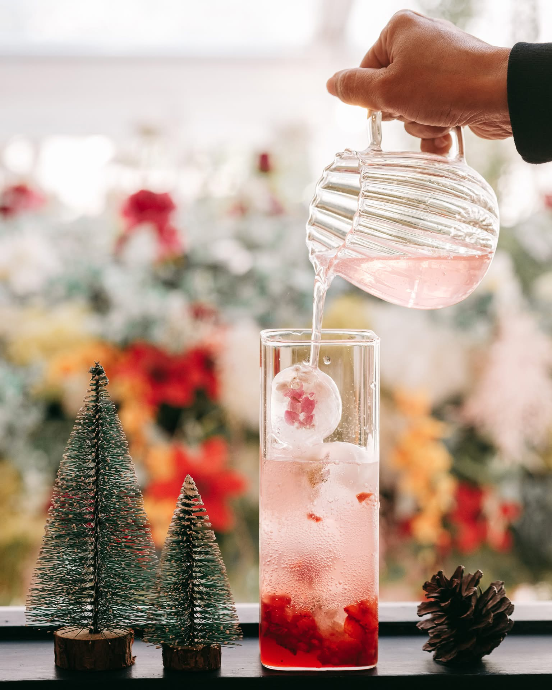

Osaka-style souffle
Soft, airy pancakes prepared as the gentle signature of the house.
Warm, airy and quietly refined. A Sukhumvit garden house for souffle pancakes, brunch and small daily rituals.


Soft, airy pancakes prepared as the gentle signature of the house.
Comfort plates, pasta, toast, coffee and seasonal desserts.
A renovated two-floor white house near BTS Phrom Phong.
Our favorites
Sweet, savory and refreshing favorites from the original Ryoku menu, reimagined in the same soft editorial flow as the reference.

Fluffy souffle pancakes with cream, fruit and a refined Ryoku finish.

A layered specialty coffee with a smooth, photogenic finish.
Colorful toast with creamy avocado, fruit notes and delicate savory balance.
Why Ryoku
Ryoku brings together Japanese-inspired pancake craft, modern cafe comfort and a setting made for slowing down.
White house architecture, soft curtains, natural light and warm table textures.
Visit for brunch, souffle pancakes and quiet afternoon coffee near BTS Phrom Phong.

Photos
A cleaner white page makes the new Ryoku photos stand out: exterior glass, crisp interiors, plated pancakes, coffee and seasonal dishes.


Journal
Small editorial stories built from Ryoku's real menu, cafe space and visit details.

Soft texture, warm cream and a slower kind of dessert.
by Ryoku
How the space turns brunch into a small escape.
by Ryoku
Refreshing drinks for Bangkok's soft golden hours.
by RyokuJapanese-Western comfort for a more complete cafe visit.
by RyokuOpen daily, 08:00 - 20:00. Near BTS Phrom Phong.
Get directionsGet directionsWords from regulars
A carousel-inspired section with the same simple controls and soft editorial feel.
Ariya P. · Brunch guest
Napat S. · Bangkok creative
Mina K. · Coffee regular
FAQ
Ryoku is known for Osaka-style souffle pancakes, Japanese-Western brunch, coffee and its garden house setting.
Ryoku Cafe is at 28 Sukhumvit 35, Bangkok, near BTS Phrom Phong.
The cafe is open daily from 08:00 to 20:00.
Yes. Call +66 9-2772-6000 for visit questions and reservations.